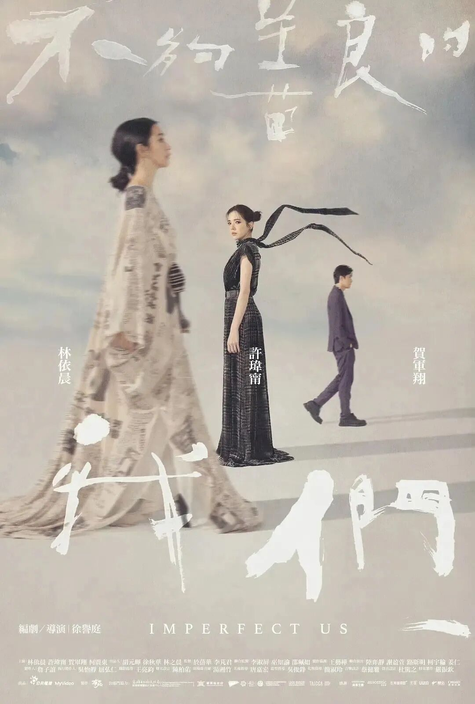
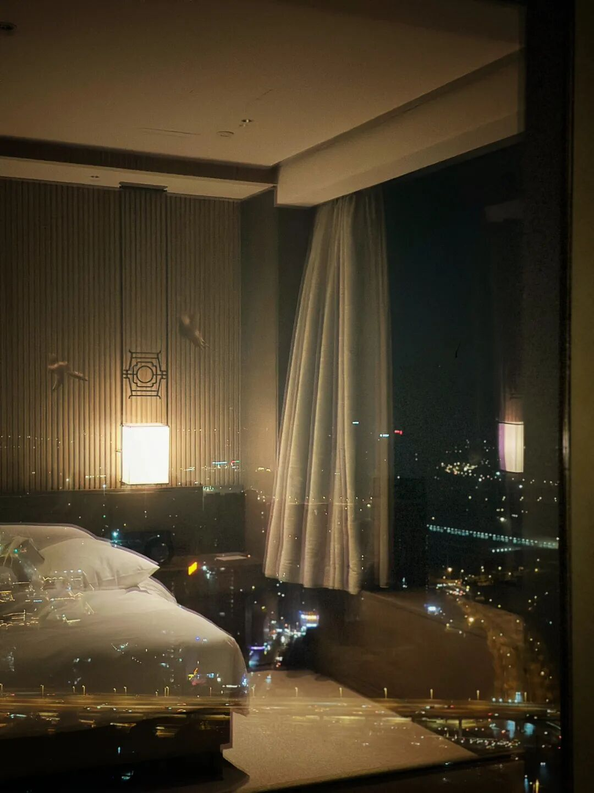
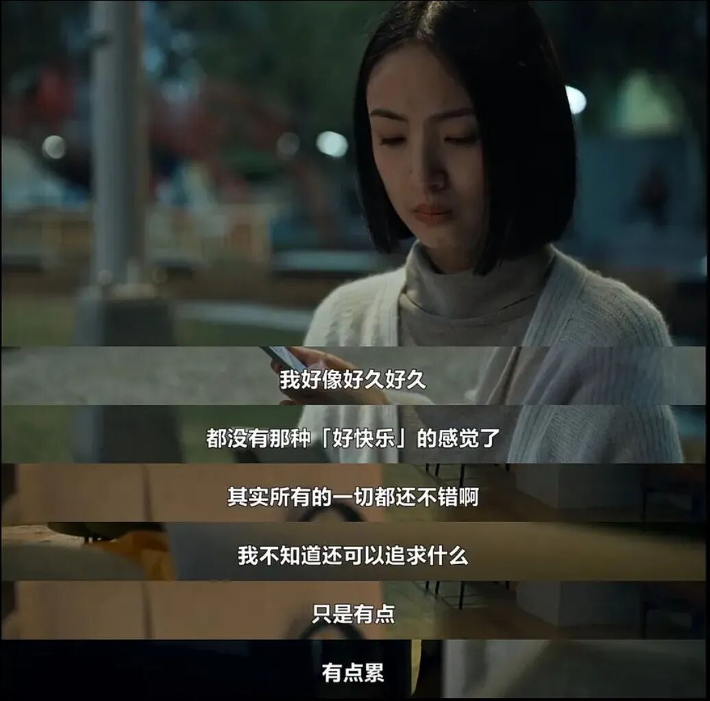
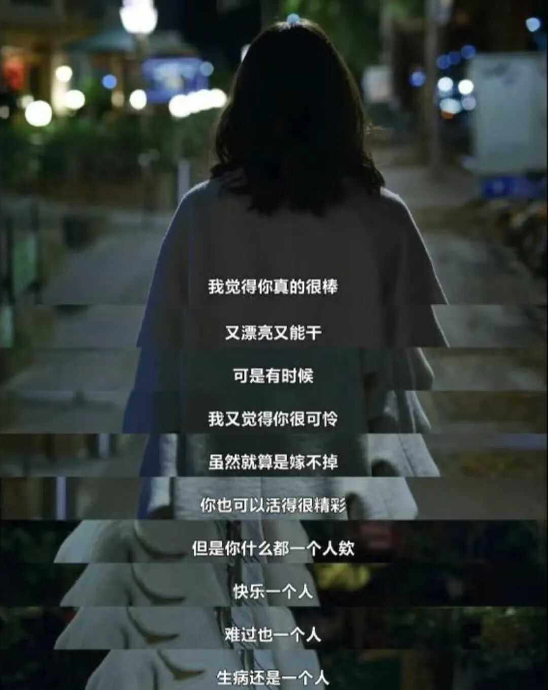
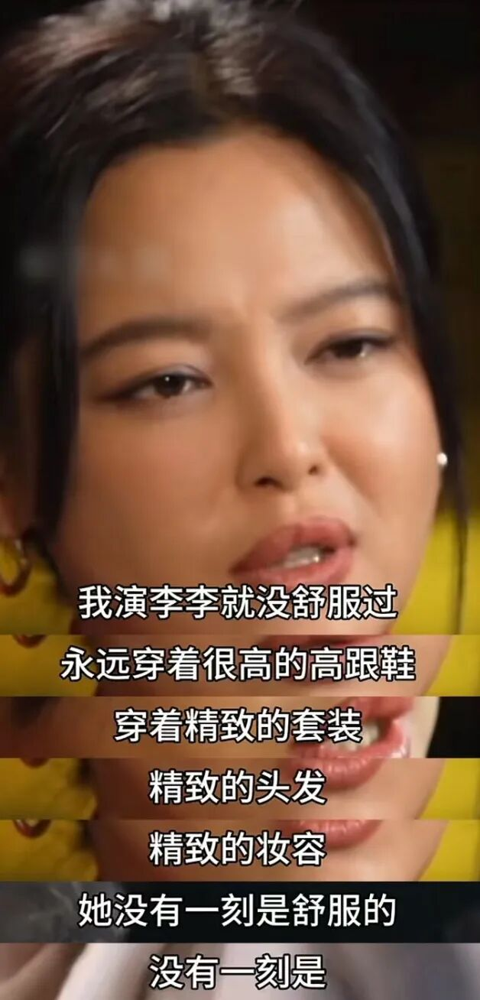
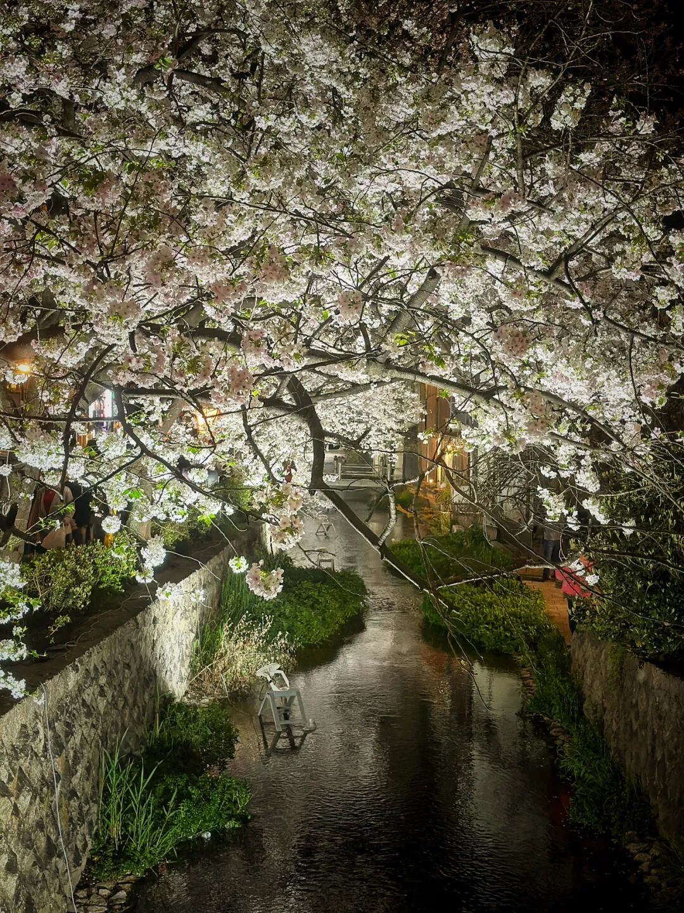
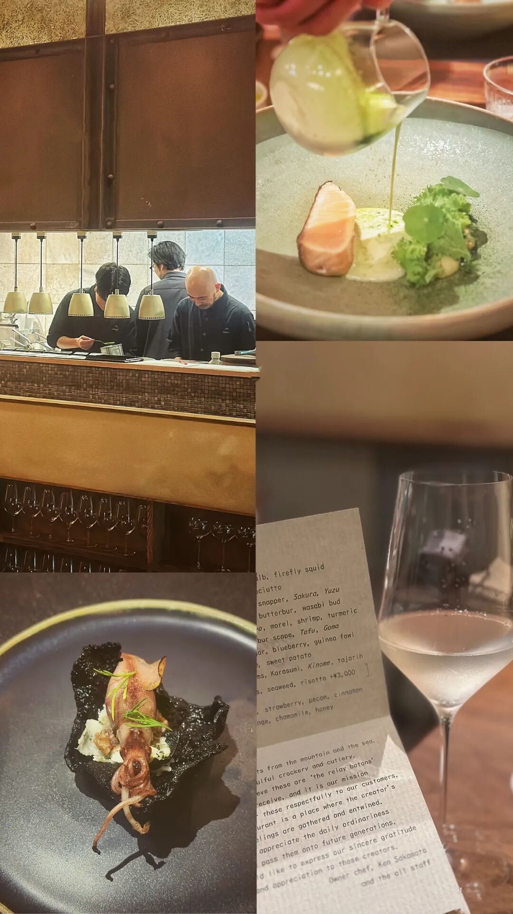
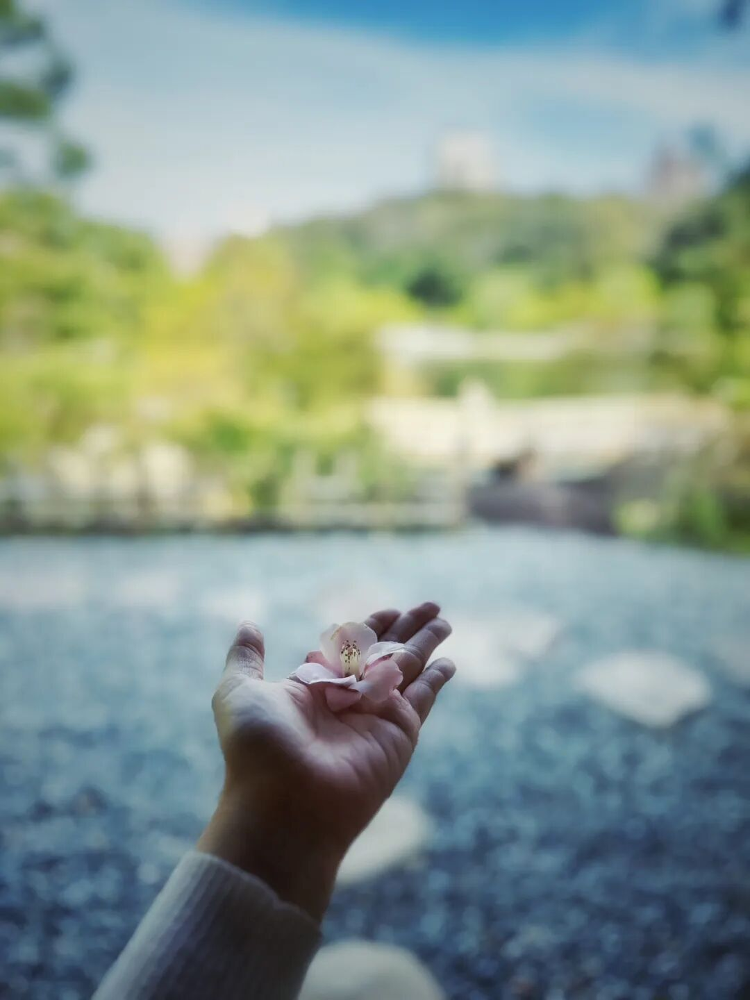

所以，人们追求的快乐到底是什么？

"
我们的善良和恶毒都不够纯粹
所以痛苦
...
深夜看《不够善良的我们》，太多共鸣，以至于忍不住爬起来写下影评。到不是失眠，而是每一天，时间都不够用。一直在全国各地飞，此刻躺在Hyatt的大床上，才有了属于自己的短暂时光。

就像林依晨饰演的角色 —— 简庆芬。没有国产剧里那么抓马，她的婚姻生活算“还不错”，只是有点累，有点忙，有点烦。因为喜欢的男人“抢到手”后，却发现婚姻原来如此无聊、平淡、令人喘不过气。用剧里她更准确的描述：开心是有，可惜总是浮在表面，稍纵即逝。剩下的只是千篇一律，日复一日。

也像许玮甯饰演的角色—— Rebecca。她在别人眼中又漂亮又能干，精致高雅，文艺浪漫，精神独立又富足。面对事业和爱情的选择时，她更敢于“做自己”，而不是依赖他人。她的离开，带走了何瑞之的青春、冲动以及所有关于未来的想象。但镜头一转，女神也在偷偷害怕寂寞以及老无所依。是啊，人这一生中，最大的命题恐怕就是对抗孤独。

编剧的精妙之处在于，通过简庆芬和Rebecca这俩人，你羡慕我，我羡慕你的剧情，提出了“独立女性就必须又飒又爽、断情绝爱？”的灵魂拷问。实际上，想要爱与被爱都是人的本能。豆瓣上有人问Rebecca与多年不见的男友重逢那一幕，他站在路灯下接儿子回家，微风吹拂着树叶沙沙作响，为什么流泪的是Rebecca？明明这些年变得苍老油腻没活力的是他，她还是那么独立漂亮，该哭的是男主吧？我想，纯粹地是因为Rebecca在看到自己有可能的另一种人生时，这么多年所坚持的单枪匹马，都成了辛酸，心痛得泪如雨下。毕竟没有哪一种人生是完美的，无论选择哪条路。也没有哪一个人能在做完一种选择后，完全不后悔。

无论哪种选择都会后悔
就连最最潇洒的李李也是
所以人们追求的快乐到底 是什么？我问自己这个问题。这个月我又去了一趟日本。因为曾有个执念 —— 在樱花盛放的四月再去一趟京都。第一次去京都是大学，二十岁的记忆里清水寺、平安神宫周围的石板路开满樱花，我在树下吃樱团的照片是永远的回忆。可惜跟着游学团匆匆一瞥，没有机会真正深度体验就又辗转到下一个城市。工作后我去了日本很多次，悠闲地在大街小巷逛吃，享受京料理和温泉酒店，古寺里的枯山水就我一人赏，茶道和敬清寂。但还是有一点遗憾，枝头空落落，和回忆里的樱花季比还是差一截，可惜每年4月都在忙车展和F1，永远请不出假。以至于遗憾成了执念，一直在心里挥之不去。今年4月我终于硬着头皮请了假。樱花季的酒店价格涨了一倍，米其林菊乃井三芳早订完了只剩Cenci，清水寺是肯定不敢去的，就连哲学之道上也挤满了人，鸭川散步突然变成disaster。太后悔啦！！！

逛完京都美术馆后在四条口看到了夜樱
可惜这条街挤满游客和中档餐馆
我突然觉得扫兴，樱花也不美了
倒不是心疼一万块的酒店，而是这样的落差让我心中的京都就此破碎，再也没有特别喜欢的地方了，本来一直想写的京都特辑也就此搁置。
就像《不够善良的我们》里的何瑞之，虽然想念Rebecca，却庆幸没有选择她。
人性很犯贱，到手的怎么看都不顺眼，得不到的永远更迷人。

第二天去吃了Cenci, Asia Best 50
在平安神宫旁挖了一个类似欧洲古老酒窖的空间
砖块却是日本信乐烧的泥土
就像Cenci的烹饪手法是意大利的
食材却是来自京都各地 farm to table
昨天在机场等飞机，追到第五集开始剧情大反转，戒指蛋糕听起来像是何瑞之爱妻子的证据，很多小姑娘都被感动得骂简不知足。在我看来，他不爱妻子是肯定的，简那么多次热脸贴着冷屁股，他从来没有问候过她今天过得怎么样，从来没有与她分享过生活的感悟，连何妈都能体会到简有多辛苦，对简说对不起，但他在妈妈去世后继续冷暴力她，让简惶惶不可终日。何瑞之这种男人真的很糟糕，他谁都不爱，或者说不具备构建亲密关系的能力。他表面上确实没做像简出轨这样很过分的事情，但是实际相处过这样的人才知道有多怄气和心寒。自己不开心就要给别人甩脸，完全不理解其他人的付出和辛苦，简就是被他这种态度逼疯到出轨的。简的那句台词点出了所有：“一个路过的、不经意的赞美，可那一点点的力量就足够让我勇敢地迎向明天的太阳。”和医生出轨只是因为他给了简“一个赞”，一些安慰，仅此而已。但何瑞之却只有一句冷冰冰的谢谢，谢你个大头鬼。这么吝啬一句赞美是吗？爱无能、冷暴力男真的该死。不够善良说的应该是他。骂爽了说回日本之行，名古屋倒是出其不意的闲适。飞机空荡荡，以高岛屋为核心的商圈便利繁华，在白壁别邸吃完鳗鱼饭，逛逛德川园。德川园是德川将军家族的院子，是一个有300多年的历史的日式园林，连樱花名字也很有诗意——“红常磐万作”。我坐在茶亭的台阶上，悠哉地渡过了一个无人的惬意午后。转头看到架子上的茶花飘落一朵，放在掌心上把玩片刻，又放回原处。

没选择的那条路，并不会开满鲜花就像变得不够善良，也无法过好这一生人生这道题，怎么选好像都是错？因为谁也不知道接下来的人生会活成什么样？是不是自己真正想要的？如果要问我，答案是享受当下所拥有的就像这朵不经意握在手心的名古屋茶花至于多年前京都的樱花
就让它随风去吧
…

2024.04.22
——END